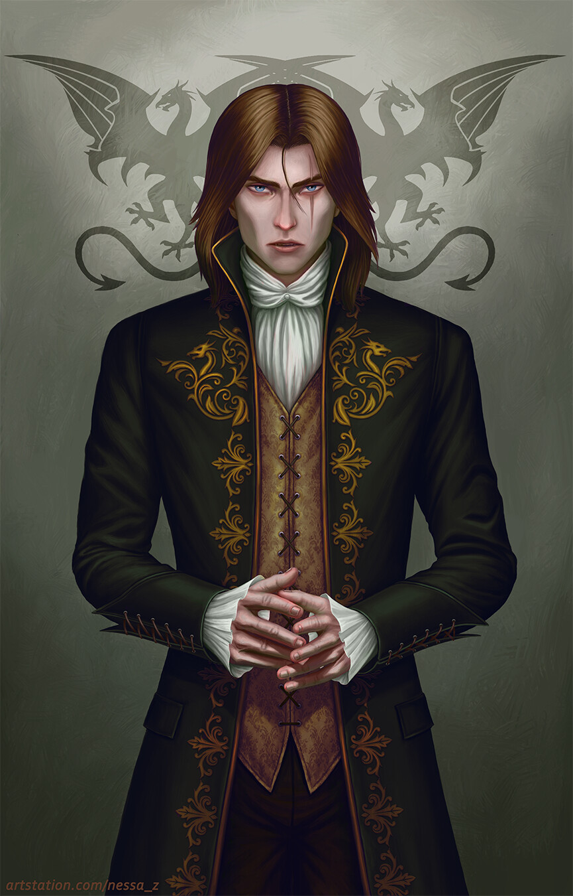

A noble vampire, sired in ages past by the brilliant Lord Merville, one of the 13 most trusted vampires of the Sires court.
The life of luxury has led him down the road of debauchery, impunity and complacency.
However in the following ages, the existence of opulent decadence has grown stale for the esteemed taste of Alizara.
His sights were aimed elsewhere, and in a night his mansion shadowed by the Castle Dominus became abandoned.
Powers
1) Sanguine Nobility
Blood flows through all living beings and it is the sap, that sustains a vampires thirst for power.
The nobles of the court of Lucious have for millenia perfected the craft of blood-weaving.
Many have opted to enchance their physique, becoming godlike creatures of destruction, but Alizara sought
a more educated approach. Alongside the cult of Sanguine Adepts he learned techniques of enchancing the very arcane
itself with the life stolen from others.
Many have become blood-mages, powerful spellcasters, feared throughout the realms, but only one has reached the status of a
Sanguine Archon - Lixena Bloodmyst Renauldt.
In the deepest recesses of Alizaras conscience, where desires untold to the world reside, hides a titanic ambition.
He will surpass all the other blood-mages and become the next and the last Sanguine Archon.
Age: 74;? Height: 1.77m; Weight: 75kg. Str: 20 Dex: 16 Con: 15 Int: 11 Wis: 6 Cha: 14